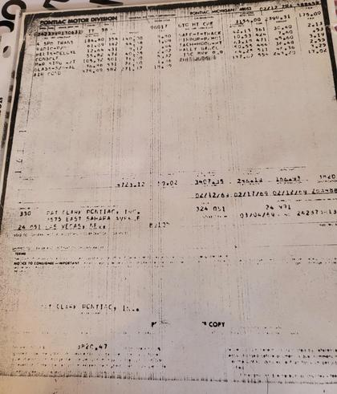
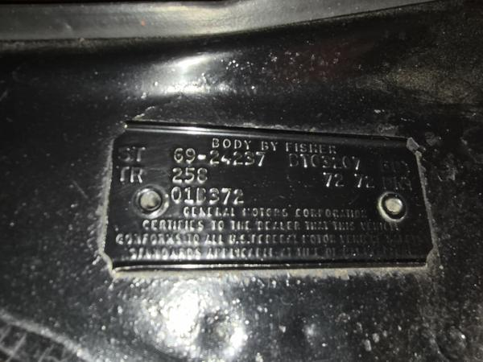
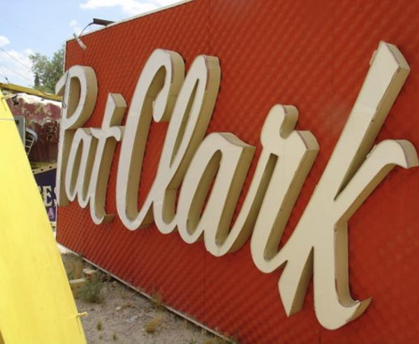
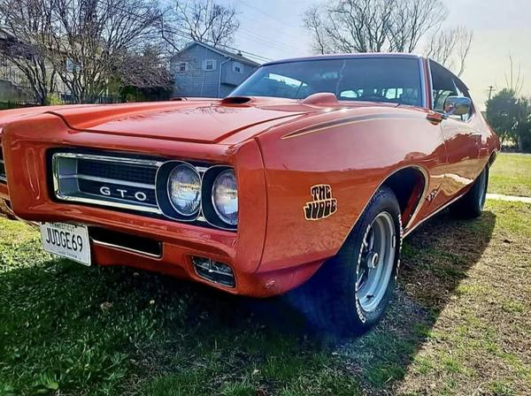
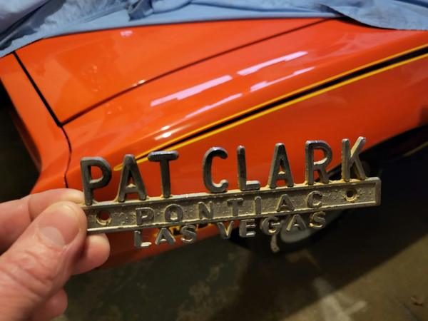
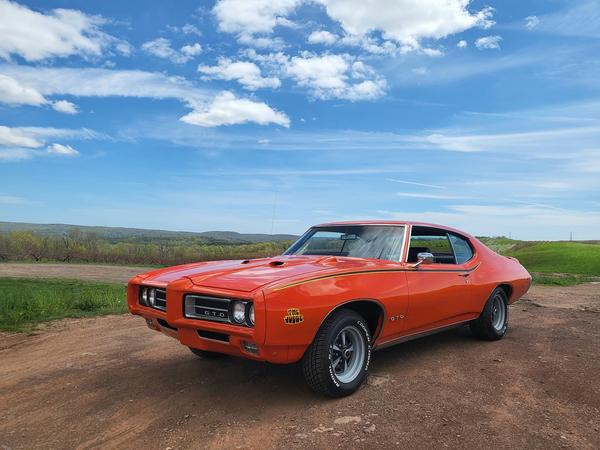
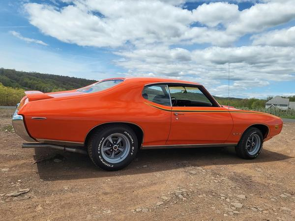
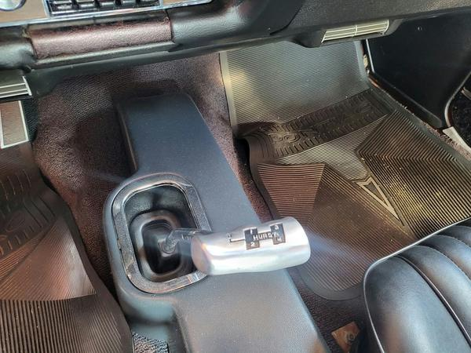

A sibling to the Framingham car
Five Carousel Red Judges print dealer order number 00017. One of them was built in Arlington, Texas, and sold through Pat Clark Pontiac in Las Vegas, Nevada. This page gathers what the papers on file show about that car, VIN 242379R130631, and keeps apart what is read straight off the paper and what is interpretation.
Until now this car appeared on the site only through a registry listing, Tier 4. The PHS invoice copy below gives it a paper record: it prints DON 00017 for this car. Documented fact Tier 2 poor copy
A registry listing shows this car as R130632 with a cowl code of 02B. The invoice and tag readings differ from that, and the registry’s entry is probably the same car misread. Hypothesis
Documents
Tap or click a thumbnail to open the full-size image. The invoice and tag photos were supplied by Al Diaz; the Pat Clark sign is background on the dealer only.



What the invoice copy shows
The copy is a faint photocopy, photographed and cropped at the right edge, so a few digits are lost. Where a reading is limited, the table says so.
| Item | What the paper shows | Label |
|---|---|---|
| VIN | 242379R13063 plus a smeared last digit. The plant letter reads R, which is Arlington, Texas. Al Diaz confirms the last digit is 1, so 242379R130631. | Documented fact for 242379R13063 and the R. Unresolved on paper alone for the last digit; the “1” is the owner’s statement. |
| Dealer order number | DON 00017 | Documented fact |
| Invoice number | ZRA 48845? The last digit is clipped at the edge of the photo. | Documented fact for ZRA 48845. Unresolved for the tail. |
| Date | 02/12/69, printed beside the invoice number. Other dates on the copy have labels too faint to read. | Documented fact for 02/12/69. Unresolved for the other dates. |
| Body | GTO HT CPE, a hardtop coupe | Documented fact |
| Dealer | Pat Clark Pontiac, Inc., 2575 East Sahara Ave., Las Vegas, Nev. Dealer code 24 051. | Documented fact |
| Ship-to | 24 991 | Documented fact The middle digit is slightly faint. |
| The Judge | Option code 554 | Documented fact |
| Transmission | 4 SPD TRANS, code 354 | Documented fact |
| Air conditioning | AIR COND, code 582 | Documented fact |
| Limited-slip | SAFE-T-TRACK, code 361. Safe-T-Track is Pontiac’s name for its limited-slip differential. This copy does not show the axle ratio. | Documented fact; axle ratio Unresolved |
| Other options | Radio 382; deluxe belts 431; console 472; power steering 501; soft-ray glass all around 531; remote mirror 424; hood-mounted tach 471; rally gauges 484 | Documented fact |
| Code 511 | A line carries code 511, but its label is unreadable. This page doesn’t interpret it. | Unresolved |
| Engine | Not identified on this copy. | Unresolved |
The cowl tag
Al Diaz supplied a photo of a Fisher Body cowl tag along with the invoice. It reads as follows.
| Item | What the paper shows | Label |
|---|---|---|
| Tag number | ST 69-24237 | Documented fact |
| Trim | TR 258. Car Distribution Bulletin 69-48 lists Trim 258 as Black. | Documented fact |
| Paint | 72 72. Code 72 is Carousel Red, the Judge’s first color per the same bulletin and this site’s glossary. | Corroborated interpretation |
| Date code | 01D, the fourth week of January 1969, followed by a separate 372 stamp. | Documented fact |
| Body number | The line to the right of ST reads something like BTO 3207, but the first letter, B or D, and the digits are not clear enough to rely on. | Unresolved |
| Tie to this car | The tag does not print the VIN. It was supplied with this car’s invoice, which is what links the two. | Corroborated interpretation |
Why a black interior?
Car Distribution Bulletin 69-48, dated December 12, 1968, allowed the Judge in “Color Carousel Red with Trim 257 Parchment or Trim 258 Black.” Documented fact See the bulletin copy.

So both trims were on offer. The Framingham car, G125205, has 257 Parchment; this car’s tag reads 258 Black. Black on this car looks like the choice made on its order, not a rule for the group. Hypothesis
Why this order went with black is not in these papers. Unresolved
Side by side with the Framingham car
| Item | Framingham car, VIN 242379G125205 | Arlington car, VIN 242379R130631 |
|---|---|---|
| Assembly plant | Framingham, Mass., plant G | Arlington, Texas, plant R |
| Invoice number | ZGA 453185 | ZRA 48845? |
| Date on the invoice copy | 01/30/69 | 02/12/69 |
| Dealer | Allen Pontiac, Belleville, N.J. | Pat Clark Pontiac, Las Vegas, Nev. |
| Ship-to | 29 991, the Zone 29 holding facility, South Kearny, N.J. | 24 991 |
| Cowl tag | FM 56607, date 01B | ST 69-24237, date 01D |
| Interior trim | 257 Parchment | 258 Black, from the tag. The tie to the car is a corroborated interpretation. |
| Transmission | Turbo Hydra-matic, TURB/HYDR | 4-speed, code 354 |
The cowl dates
The Framingham car’s cowl code is 01B and this car’s is 01D, so the Framingham code is the earlier of the two. Documented fact
Reading that as the Framingham car having been built before the Arlington car is a step further. Each plant coded its own weeks, so a code from one plant does not line up with a code from another. Hypothesis The Framingham invoice date 01/30/69 is also earlier than this one, 02/12/69, which fits that order but doesn’t prove it. Corroborated interpretation
Air conditioning and Las Vegas
This car carried factory air conditioning, code 582, and was sold through a Las Vegas dealer. Documented fact Why it was ordered that way is not documented. A desert-climate reason would be natural, but that is a guess. Hypothesis
What the papers don’t tell us
- The axle ratio. Safe-T-Track, code 361, names the limited-slip differential, not a gear ratio, and no rule tying air conditioning to a particular axle is on file. Unresolved
- How many of the DON 00017 or other pattern cars were ordered with black versus Parchment. Unresolved
- Why this car was routed to Zone 24 and Pat Clark Pontiac, or whether it served any show or promotional purpose. Unresolved
- The engine, and the label on invoice code 511. Unresolved
- The cowl tag’s body-number prefix. Unresolved
Photos of the car
These photos came to Al Diaz from the car’s owner. Whether the car in them is VIN 242379R130631 rests on the owner’s identification; the VIN isn’t visible in any of them. Hypothesis Tap or click a thumbnail to open the full-size image.




